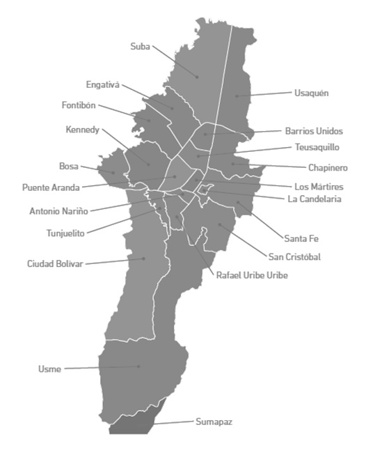

<!--
  Generated template for the MapaPage page.

  See http://ionicframework.com/docs/components/#navigation for more info on
  Ionic pages and navigation.
-->
<ion-header>

  <ion-navbar>
    
    <button ion-button menuToggle>
       <ion-icon name="menu"></ion-icon>
     </button>
    <ion-title>Mapa</ion-title>

    <ion-buttons end>
        <button ion-button icon-only (click)="returnToHome()">
          <ion-icon name="home"></ion-icon>
        </button>
      </ion-buttons>


  </ion-navbar>

</ion-header>


<ion-content padding>
    
  <ion-item>
      <ion-label>Localidad</ion-label>
      <ion-select [(ngModel)]="localidad">
        <ion-option value="todas">Todas</ion-option>
        <ion-option value="chapinero">Chapinero</ion-option>
        <ion-option value="fontibon">Fontibon</ion-option>
        <ion-option value="engativa">Engativa</ion-option>
        <ion-option value="usme">Usme</ion-option>
        <ion-option value="suba">Suba</ion-option>
      </ion-select>
    </ion-item>

    <ion-item >
      
    </ion-item >
</ion-content>
